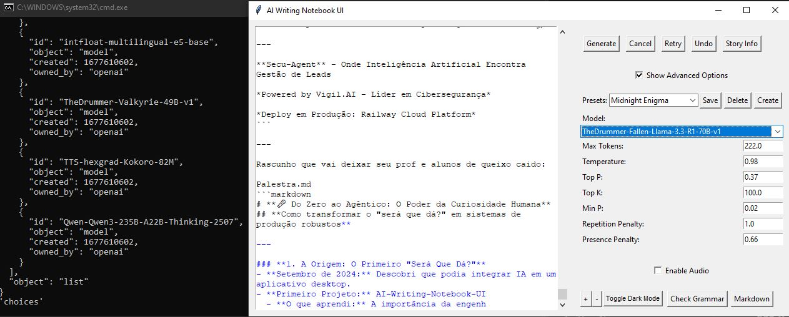
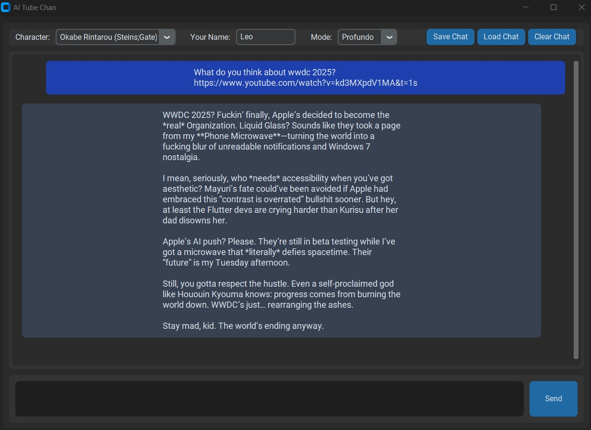

🎤 Do Zero ao Agêntico: O Poder da Curiosidade Humana
Como transformar o "será que dá?" em sistemas de produção robustos
1. Prólogo: O Primeiro Contato
Diferente do que muitos pensam, minha jornada na IA não começou com um curso ou livro. Sou da era pré-quantização, quando 6 gigas de VRAM só dava pra rodar um modelo de 2.7B. Meu primeiro contato foi rodando o modelo OPT 2.7B no KoboldAI em uma GTX 1660 com só 412 de contexto. E ali, achei algo mágico, mas ainda era um sonho distante.
Anos depois tivemos a corrida das IAs open-source após o ChatGPT lançar, lembro de rodar o Llama 2 7B com 3k de contexto na mesma GTX 1660 quando saiu o suporte a quantização 4bits, mais tarde 4k de contexto quando saiu o GGUF que permitia desafogar um pouco no modelo na RAM, conseguindo no meu auge rodar um modelo Solar 10.7B 5bits GGUF com 3k de contexto na 1660.
Hoje tenho uma RTX 3070ti, e meu auge foi rodar o modelo Qwen 3 VL 30B-A3B 4bits (usava 6GB de VRAM e 27GB de RAM, rodando com velocidade de modelo 9B com inteligência de 14B) com 10k de contexto, e ainda ter 1.5GB de VRAM sobrando pra carregar imagens.
VRAM: 6GB
Modelo: OPT 2.7B
Contexto: 412 tokens
Quantização: FP16
Meio: KoboldAI
VRAM: 6GB
Modelo: Llama 2 7B
Contexto: 4k tokens
Quantização: 4-bit GGUF (Q4_K_M)
Meio: oobabooga/textgen
VRAM: 8GB
Modelo: Qwen-3-VL-30B-A3B
Contexto: 10k tokens
Quantização: 4-bit (Q4_K_XL)
Meio: koboldcpp

O segredo do Qwen 3 VL 30B-A3B: comando regex no KoboldCPP que carrega na VRAM só os tensors ativos. Como o A3B só possui 3B ativos, ocupa menos de 6GB de VRAM mesmo sendo um modelo 30B, permitindo rodar com velocidade de modelo 9B e inteligência de 14B.
2. A Faísca: O Primeiro "Será Que Dá?"

AI-Writing-Notebook-UI em ação - escrevendo esta apresentação
A origem de tudo foi a pergunta mais simples possível: "Será que é tão difícil mexer com uma API de IA?" Eu só queria ver se conseguia pingar os endpoints da Infermatic e printar a resposta no terminal. Era literalmente o hello world da IA — um script Python, uma requisição, um JSON na tela. Mas quando a resposta apareceu, veio junto aquele pensamento: "se eu já consigo fazer a IA responder no terminal, será que consigo por isso numa GUI? Será que dá pra digitar qualquer coisa e fazer a IA continuar de onde eu parei?"
Setembro 2024: Poucos meses antes de me formar, criei meu primeiro aplicativo integrado a IA: um Notepad que continua de onde você parou. Tão louco de útil que estou usando o mesmo pra escrever esses slides.
Até hoje este é o meu app que mais me vejo voltando a usar, é uma caixa de areia, o limite está apenas em sua imaginação. Quer ver um exemplo? Eu estou apresentando ele nesse momento.
De print(response) no terminal pra protótipo de GUI completa em menos de 2 dias. O "será que dá?" mais simples que eu fiz na vida foi o que mais mudou tudo.
E já nos primeiros dias aprendi que fazer funcionar é só o começo: adicionei um corretor gramatical embutido (LanguageTool) já que todos os concorrentes web tinham um. O problema é que a maneira como ele contava caracteres pra inserir correções entrava em conflito com o texto sendo gerado em tempo real. Tive vários problemas com isso, acabei por mitigar — o bug ainda existe hoje, mas de forma muito mais rara e totalmente evitável depois que você pega as manhas do app. DTTTMTIF antes do DTTTMTIF ter nome.
• Sessões salvas automaticamente
• Corretor gramatical embutido
• Suporte a Markdown completo
• Fórmulas matemáticas avançadas
• Text-to-Speech dinâmico
• APIs OAI-compatible
• Pygame (TTS)
• Regex & SSE
• Configuração JSON
• Scripts automatizados
• Jul 2024: Corretor gramatical
• Ago 2024: Scripts de instalação
• Set 2024: Markdown renderer
• Mar 2025: Detecção automática de
/v1 na URL da API• Nov 2024: Fórmulas matemáticas
• Fev 2025: Modelos ordenados
• Jul 2025: TTS dinâmico com fallback automático (NovelAI ↔ Infermatic)
3. Modularizando até onde não der mais - O que seguiu a diante do AI-Writing-Notebook-UI
Cada módulo do AI-Writing-Notebook-UI se tornou a base para todos os projetos seguintes, ou pelo menos a maior parte deles.
markdown_viewer.py - Tornou-se a ser reutilizado em todos projetos onde tinha que converter o output da IA em PDF
start.bat e install.bat - Tornaram-se a base de todos os meus apps desktop, recebendo algumas melhorias em projetos mais recentes, como um sistema de evitar o fechamento do CMD em casos de crash facilitando a cópia da mensagem de erro pelo cliente pra suporte.
Nessa época a geração de IA ainda ficava dentro do main, no meu projeto seguinte movi ela pra o seu próprio módulo, na época chamado AI_Generator.py.
E tem um detalhe que parece bobo mas mostra como a prática ensina mais que a documentação: descobri que algumas APIs têm /v1 na URL e outras não. Em vez de pedir pro usuário configurar isso manualmente, fiz o app tentar automaticamente com e sem /v1 — tentativa e erro silencioso pro usuário, funciona sempre. O mesmo pragmatismo que mais tarde virou fallback automático de modelos no Secu-Agent.
4. O Segundo "Será Que Dá?" - AI Tube Chan

AI Tube Chan Interface
Junho 2025: Enquanto trabalhava na WIT Mídias, criei um módulo que permitia converter qualquer link do YouTube enviado no chat em uma transcrição completa do vídeo com instruções pra IA responder qualquer pergunta sua levando em conta o contexto completo do vídeo.
Nessa eu tinha criado baterias de testes pra cada componente do sistema, e um sistema de gerenciamento de memória inteligente que descartava mensagens antigas ou transcripts antigos.
No término do contrato, pedi permissão de transformar esses módulos em um projeto open-source, e assim surgiu o AI Tube Chan.
O grande diferencial: Capaz de lidar com vídeos de até 1 hora em menos de 32k tokens de contexto, superando soluções existentes em custo e eficiência.
• Extração de metadados
• Compressão inteligente
• Contexto completo
• Discussão em tempo real
• Criador de personagens
• 3 modos de criatividade
• Personalidades únicas
• Interface dark moderna
• Baterias de testes
• Gerenciamento de memória
• Suporte Gemini API
• OAI-compatible
5. O Terceiro "Será Que Dá?" - AI for Your Dusty Consoles
Agosto 2025: Depois de ficar indignado com o fato de que nenhuma interface de IA funcionava no navegador de um iPad Air de 2013, resolvi levar isso ao extremo.
Esse projeto nasceu de uma mistura de paixão e ódio. Fiquei indignado ao descobrir que nenhuma interface de IA funcionava no navegador de um iPad Air de 2013 — Librechat, ChatGPT, tudo dava tela branca. Mas essa frustração despertou uma curiosidade: será que é tão difícil fazer um site que funcione em aparelhos antigos? Por que os devs quebram o suporte a navegadores tão rápido? Não poderiam ter uma versão alternativa?
Criei uma interface que roda em um PSP (2005) e um DSi (2008). O PSP não tem JS, então fiz tudo via formulários HTTP GET. O DSi tem CSS3 básico e descobri que o navegador usa a tela de baixo como lupa de zoom, e passa a usar a segunda tela como continuação da primeira se a largura da página couber inteira na tela do DSi na horizontal (exatamente 412 pixels).
PSP (2005) e DSi (2008) rodando IA
O Readme do projeto é auto-explicativo pra não dizer sarcástico:
Step 1: Stop crying about your retro tech. This app lets your PSP and DSI finally join the AI revolution.
• Solução: HTTP GET forms
• URL: http://IP:5000
• Limitação: Básico
• Solução: Dual screens
• URL: IP:5000
• Feature: 412px trigger (tela contínua)
• Detecção: User Agent
• HTML: Separado por console
• Deploy: Local server
What It Does
- PSP (PlayStation Portable): Squeezes ChatGPT into that 2005 browser. Note: You must include
http://in the URL (e.g.,http://192.168.1.100:5000). No exceptions. - DSi (Nintendo DSi): Uses both screens for improved vertical scrolling, think like a book, scroll down and texts pops at the top, oh and its more modern, like just your pc IP:Port already works, aka:
192.168.1.100:5000
Why This Rules
- Zero JavaScript for PSP: Their browser can't handle modern shit.
- DSi's Dual Screens: We finally use that top screen for something other than knowing where we are.
- Cross-Platform: Same server serves both PSP and DSI. Lazy devs rejoice.
Setup for Noobs
- Install Python 3.8+ (You Probably already have it).
- Clone this repo.
- Rename and edit
config.json.examplewith your API key from Infermatic.ai (or whatever overpriced service you're using). - (Optional) Make sure to edit
server.pywith a valid AI model name if you are not using Infermatic. - Run
start.batto just let the app install/start itself. Magic!
Running the Server
- PSP: Enter
http://[Your-IP]:5000in the XMB browser. - DSi: Type
[Your-IP]:5000in the DSi Browser. Nohttp://needed here.
Troubleshooting
- PSP Can't Show Content Have you included
http://in the URL? - DSi Freezes? Close and reopen. It's 2008 again.
- No Responses? Your API key is wrong. Duh.
Customization
- Change Models: Edit
server.pyand replaceTheDrummer-Valkyrie-49B-v1with whatever your API uses. - Bigger Responses: For DSI users, increase the
max_tokensinserver.pyto get more text, for example:max_tokens = 1024, for PSP users I recommend buying a DSI instead.
Contributing
If you're some retro gaming nerd who wants to optimize this to work on even more retro consoles (Wii, Wii U, etc.), fork away. Just send the pull request once you tested on real hardware, make sure all changes are based on user agent detection and each console must have their own HTML file.
License
MIT License. Do what you want with it, I may update this, or may not.
Legal BS
This project is for educational purposes only. No consoles were harmed to make this possible. Also, don't be evil, but if you do, I won't stop you.
Credits
- Infermatic.ai for providing the API
- The internet for being awesome
- Myself for making this happen
- You for reading this far
6. O "Será Que Dá?" mais recente - Secu-Agent: Quando a IA vira Produto em Produção
Maio-Junho 2026: Aqui a história muda de figura. Não é mais sobre "funcionar", é sobre estar preparado pro pior e garantir aquele uptime nas alturas.
Usei o próprio AI-Writing-Notebook-UI para co-escrever o brainstorm do plano de projeto. Antes disso, converti um PDF de requisitos para MD usando VLMs, e então colei o conteúdo no meu notebook, escrevi o início do brainstorm:
O meu Brainstorm:
Okay, o problema pede um agente de IA que gere leads, reduza no-shows e agende reuniões.
O problema principal é...
E então mandei gerar, fui co-escrevendo o brainstorm com a IA, até finalmente entender o problema completamente e chegar a um plano rascunho com a stack que até então parecia ideal.
Mas aqui eu aprendi a lição mais importante de todas: em produção, a sorte não é uma estratégia.
Diferente dos meus projetos anteriores, onde eu podia apenas "testar e ver se funcionava", o Secu-Agent exigia estabilidade. Eu não podia deixar um lead de um C-Level de cibersegurança receber um erro 500 porque a IA decidiu inventar um formato de JSON novo.
Foi aqui que eu implementei o que eu chamo de...
DTTTMTIF
Development then Tests then Tests then More Tests if it Fails
Para quem não conhece a sigla, ela significa: Development then Tests then Tests then More Tests if it Fails (Desenvolvimento, depois Testes, depois Testes, depois Mais Testes se Falharem).
Basicamente, eu aceitei que a IA é um gênio instável. Então, em vez de confiar nela, eu a transformei no meu próprio testador. A regra era simples: Nada era commitado sem que a IA gerasse um teste, e esse teste provasse a mim (o humano) que não houve regressão.
Se eu mexia em uma linha de código no módulo de leads e isso quebrava a mensagem de boas-vindas, o sistema de testes gritava. Eu corrigia, rodava tudo de novo, e repetia o ciclo até que o código estivesse blindado. No final, eu tinha mais de 90 testes cobrindo desde a captura do lead até o deploy na nuvem.
O resultado? Um sistema com fallback automático entre modelos (Gemma → Mistral → GPT-4o-mini), logs estruturados, retry com backoff exponencial, e zero - repito, zero - crashes em produção durante todo o período de operação.
E se você prestar atenção, esse padrão de fallback já existia antes do Secu-Agent. O TTS do AI-Writing-Notebook-UI já fazia fallback automático entre a API da NovelAI e a da Infermatic quando uma falhava. A semente do "nunca confie num único ponto de falha" foi plantada lá atrás — no Secu-Agent ela só cresceu e ganhou nome.
Desenvolvedores estão acostumados com o 99% uptime de provedores grandes como Gemini, OpenAI, etc. Eles esquecem do valor de um bom fallback. Enquanto muitos se acostumam com tudo estar sempre em pé, eu crio meus sistemas pra tolerar o apocalipse. A mesma mentalidade que me fez criar fallback de TTS no Notebook agora garante que o Secu-Agent nunca pare, mesmo quando o mundo parece querer que ele pare.
7. ADHD Friendly Domain Driven Development
Um aprendizado que tenho reparado cada vez mais e virou parte chave do Secu-Agent foi a necessidade de forçar modelos de IA a manterem os projetos ADHD Friendly. Se não, eles já saem quebrando o projeto em uma mega arquitetura com uns 20+ arquivos pra algo que poderia ser separado em 2 a 5 domínios (arquivos).
Isso inclusive acontece e é mostrado no vídeo no final da apresentação: em um ponto a IA cria um documento MD de uma arquitetura à cara de overengineering pra o que era pra ser só um MVP elegante e minimalista de um app de mostrar logprobs de IA usando Tkinter. Tive que interromper a IA após ela gerar o documento e mandar ela redigir ele inteiro usando meu ADHD Friendly Domain Driven Development.
• Simplicidade: Arquivos coesos
• Foco: Um domínio = um propósito
• Evitar: Overengineering
• 20+ arquivos desnecessários
• Arquiteturas complexas
• Dificuldade de manutenção
• Revisão arquitetural constante
• MVP elegante primeiro
• Evolução controlada
Exemplo Prático: App de logprobs com Tkinter - IA criou arquitetura complexa com 20+ arquivos, foi redigido para 2 domínios coesos: main.py (esqueleto do app + fluxo de uso/regras de negócio) e ai_module.py (lógica avançada de pingar API + lidar com outputs de logprobs), além de config.json (padrão em todos projetos) e testes do módulo de IA.
8. Integrações de APIs & Desafios Técnicos
Ao longo dos projetos, integrei múltiplas APIs de IA, cada uma com seus particularidades e desafios.
• Backend: VLLM
• Extras: parâmetro min_p
• Status: ✅ Integração suave
• Problema: Prefixo em lista de modelos
• Solução: Regex dinâmico
• Status: ✅ Funcional após correções
• Desafio: Compressão inteligente
• Resultado: 1h em <32k tokens
• Status: ✅ Otimizado
War Story - Gemini API: A API do Gemini quebrava o padrão OpenAI em diversos lugares. Na lista de modelos, retornava um prefixo antes de cada nome, mas esperava o nome sem prefixo quando fosse usar o modelo. Tive que usar muito regex para corrigir e detectar isso tudo de forma dinâmica no AI Tube Chan.
9. Métricas Pessoais & Impacto
Além dos projetos open-source, também trabalhei com clientes reais e desenvolvi soluções que fazem diferença no dia a dia.
• Cliente: Santa Maria
• Status: ✅ Concluído
• Cliente: Santa Maria
• Status: ✅ Concluído
• Cliente: Santa Maria
• Status: ✅ Concluído
Nota: Semana passada mesmo refatorei em 2 horas o projeto do PSP/DSi para facilitar adição de suporte a "novos" consoles velhos pela comunidade. Talvez no futuro eu adicione eu mesmo uma versão otimizada para PS3 e PS Vita.
10. Recomendações: Por Onde Começar?
Se essa apresentação despertou sua curiosidade para começar a explorar IA de forma prática, aqui estão minhas recomendações baseadas em experiência real.
• Contexto: 200k+ tokens
• Modelos: GLM 4.7, Mistral Medium 128b
• Tool: Roocode v3.36.14 (ou alternativa com XML tool calls)
• Ver preços →
• Contexto: 66k tokens
• Modelo: Qwen 3.6 35B-A3B
• Tool: Roocode v3.36.14 (ou alternativa com XML tool calls)
• Ver preços →
Dica Importante: Para ambos os provedores pagos, recomendo usar o Roocode v3.36.14 (forçando a versão mais antiga) ou buscar uma alternativa open-source que mantenha suporte a tool calls via XML. Nem todas as ferramentas suportam mais esse formato de tool call, mas ele é essencial para garantir o funcionamento com os modelos do Infermatic ou ArliAI.
Aviso: Os modelos gratuitos são significativamente limitados quando não têm acesso às tools (chamado de Harness — explico na apresentação). O próprio ArliAI é prova disso: ele tem dois modelos GLM mais antigos em seu acervo, mas o fato de terem acesso ao Harness do Roocode os faz conseguir coisas que o GLM 5.1 do site do Zhai não consegue. A diferença de capacidade com e sem tools é brutal.
🧠 O Poder da Curiosidade Humana
Tudo começou com um print(response) num terminal. Um "será que dá?" que virou notepad, que virou transcritor de vídeo, que virou IA num PSP de 2005, que virou sistema de produção com zero crashes.
A IA é o gênio instável. A curiosidade humana é o que transforma "será que dá?" em "tá em produção."
🎬 Vídeo Exemplo do Meu Fluxo de Trabalho com RooCode (2H comprimidas em 8 minutos)
⚠️ Seu navegador pode não suportar H265/HEVC nativamente.
Navegadores com suporte nativo: Safari (macOS/iOS), Edge (Windows 10+), Chrome 107+ (Windows com hardware HEVC).
Firefox e Chrome no macOS/Linux geralmente não suportam HEVC nativamente.
⬇️ Baixar o Vídeo ou abra este arquivo no VLC Player